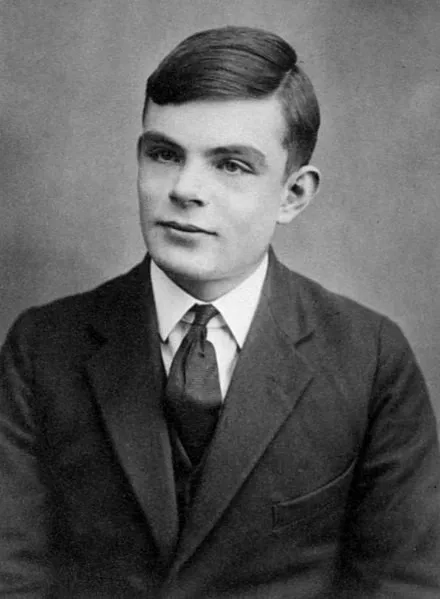
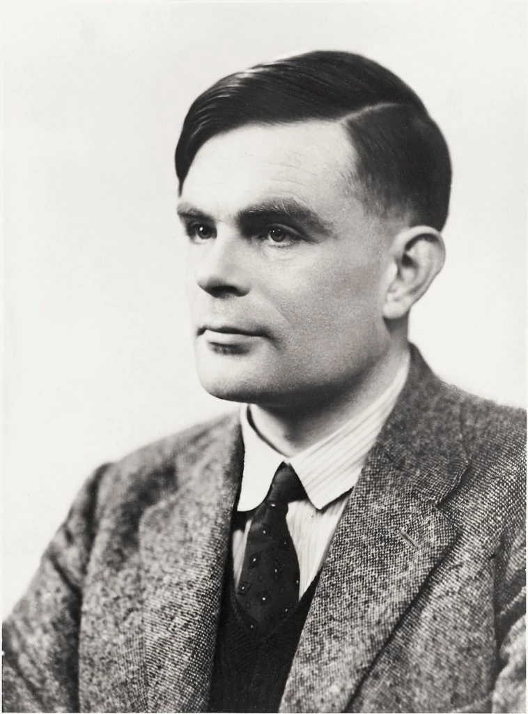

| 银碗？ |
首页 | 图灵 | 图灵奖 | 图灵奖历届得主 | 参考文献 | 返回寝室主页 |
|---|
|  |
艾伦·麦席森·图灵（英语： Alan Mathison Turing ， 1912年6月23日~1954年6月7日），英国计算机科学家、 数学家、 逻辑学家、 密码分析学家、 理论生物学家，被誉为"计算机科学之父"、"人工智能之父"，英国皇家学会院士。 1912年6月23日，艾伦·麦席森·图灵出生于英国伦敦。 1922年6月，就读于哈泽尔赫斯特名为"威尔士"的预科学校，他写给父母的信显示了他对数学和化学的兴趣以及他的最新发明。 1926年，考入伦敦谢伯恩公学，受到良好的中等教育。中学时图灵就能读懂爱因斯坦相对论，撰写了爱因斯坦的一部著作的内容提要，获得国王爱德华六世数学金盾奖章。 科研时期1931年，图灵考入剑桥大学国王学院专攻数学，并获得数学奖学金。 1935年，发表论文《论高斯误差函数》，因此当选为国王学院的研究员，并于次年获得英国史密斯数学奖 1936年，发表论文《论可计算的数及其在密码问题中的应用》，提出被后人称为图灵机的逻辑机通用模型。同年9月，图灵应邀到美国普林斯顿高级研究院学习，在阿朗佐·丘奇（Alonzo Church）的指导下攻读博士学位。 1938年，获普林斯顿大学博士学位，主要工作为纯粹数学和早期的密码研究。同年夏天，回到英国工作，仍在剑桥大学国王学院任研究员。 二战期间1939年秋，图灵应召到英国外交部通信处从事军事工作，主要是破译敌方密码的工作。1940年春，图灵设计了一台新的名为"甜点"（Bombe）的机器以对抗德国军队的恩尼格玛密码机，该机器每个月就能破译多达8400条恩尼格玛密码机的加密信息。图灵还亲自破译了恩尼格玛密码机发出的U型潜艇攻击北大西洋商船队的加密信息，保障了英国战时物资的运输。 1942年，图灵发现了第一种破译金枪鱼密码机信息的系统方法，让盟军对德国的战略有了更深入的了解，同时也改变了战争的进程。金枪鱼密码机的通信网络是移动电话网络的先驱，它横跨欧洲和北非，为希特勒和柏林的陆军总司令部以及前线将领建立了联系。 1946年，图灵被授予大英帝国勋章，以表彰他在战时的贡献。 战后工作1945年到1948年，图灵在伦敦泰丁顿国家物理实验室负责自动计算引擎（ACE）的研究工作，写出一份长达50页的关于ACE的设计说明书。在图灵的设计思想指导下，1950年制出了ACE样机，1958年制成大型ACE机。 1948年，担任曼彻斯特大学高级讲师，并被指定为曼彻斯特自动数字计算机（Madam）项目的负责人助理，具体领导该项目数学方面的工作。 1949年成为曼彻斯特大学计算机实验室的副主任，负责最早的真正意义上的计算机——"曼彻斯特一号"的软件理论开发。 1950年，图灵编写并出版了《曼彻斯特电子计算机程序员手册》，继续进行数理逻辑方面的理论研究，并提出了著名的"图灵测试"。同年10月，图灵发表论文《机器能思考吗》，这一划时代的作品使图灵赢得了"人工智能之父"的称号。 1951年，由于在可计算数方面所取得的成就，当选为英国皇家学会院士。 1952年，图灵开始研究理论生物学，并发表了一篇论文《形态发生的化学基础》（The Chemical Basis of Morphogenesis）。 迫害逝世1953年1月，图灵家里被盗，警察调查案件的过程中发现了他与同性伴侣的关系，结果图灵被审判并定以严重猥亵的罪名。图灵面临两个选择：坐牢或接受化学阉割（注射雌激素），他选择了后者。持续一年的合成雌激素注射造成了他的性无能和乳房发育。 1954年6月7日，图灵被发现死于家中的床上，床头还放着一个被咬了一口的泡过氰化物的苹果。 2009年，时任首相戈登·布朗代表英国政府就"图灵所受的骇人听闻的对待方式"作出正式道歉。 2013年，英国女王伊丽莎白二世向图灵追加了"皇家赦免令"，赦免令说，"图灵对战争的卓越贡献和在科学界留下的遗产应该被后人铭记和认可。" |
|---|---|
|  |